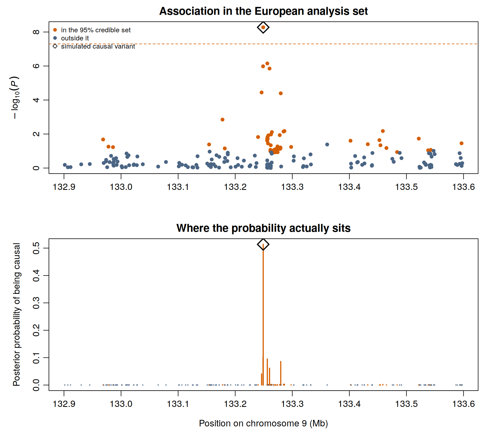
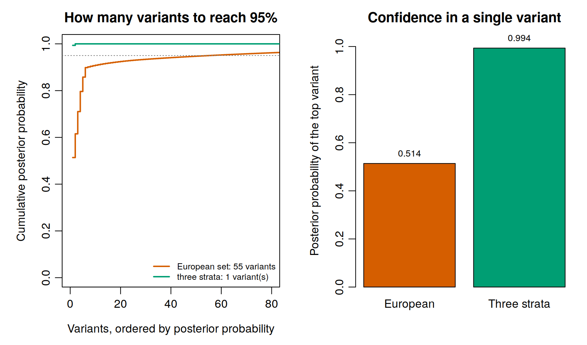

Fine mapping
An association peak is not a finding about one variant. Nearby variants are inherited together, so a single causal variant drags its neighbours up with it and the association test cannot tell them apart. In the European analysis set the ABO signal is carried by dozens of variants, and the one with the smallest P value is not necessarily the cause.
Fine mapping asks which of them it is, and answers with a credible set: a shortlist that, under the assumptions of the method, contains the causal variant with a stated probability.
~/gwas_tutorial/
├── scripts/06_finemapping_annotation/
└── results/finemap/Finish Association testing. The comparison at the end of this page also uses the output of Meta-analysis.
The demonstration phenotype was simulated from a known causal variant, 9:133249045:A:G. Every statement below can therefore be scored against the truth: does the credible set contain it, and where does it rank? On real data you never know this. Take the opportunity while it lasts.
01 - The region and its linkage disequilibrium
bash scripts/06_finemapping_annotation/01_region_and_ld.shTwo inputs are needed: the association statistics for a window, and the correlations between the variants in it.
Choosing the window. Wide enough to contain the signal and its flanks, narrow enough that assuming a single cause is plausible. A few hundred kilobases either side of the lead variant is conventional; here 132.9 to 133.6 Mb on chromosome 9, which contains 198 variants.
That number is worth pausing on. A genotyping array carries a couple of hundred markers in a 700 kb window, and the resolution of any fine mapping is bounded by what was measured. Imputation raises the count but not the information.
In-sample LD, computed from the genotypes actually analysed, is correct whenever individual-level data are available, and it is what this page uses. With summary statistics only, an external reference panel is substituted and must match the ancestry of the study. A European reference used for an African or admixed sample produces a credible set that is precise, plausible and wrong. If the analysis reaches this point with a mismatched reference, nothing downstream will signal the error.
02 - Posterior probabilities and the credible set
Rscript scripts/06_finemapping_annotation/02_finemap_abf.RThe script implements Wakefield’s approximate Bayes factor in a few readable lines. For each variant, from its estimate b and standard error s:
\[r = \frac{W}{W + s^2}, \qquad \log \text{ABF} = \tfrac{1}{2}\left(\log(1-r) + \frac{r\,b^2}{s^2}\right)\]
Normalising across the region gives each variant a posterior probability of being the causal one. Ranking by that probability and taking variants until they sum to 0.95 gives the 95% credible set.
This method assumes there is exactly one causal variant in the region. Where a locus carries two independent signals it will not find them: it returns a single set that mixes both, or follows whichever is stronger.
In PDAC that is not hypothetical. TERT-CLPTM1L carries multiple independent signals in a narrow window, and collapsing them into one lead variant would misassign any mechanism inferred later. Methods that allow several causal variants, SuSiE, FINEMAP and CAVIAR among them, return one credible set per signal and are the right choice whenever multiplicity is plausible or the sample is large enough to resolve it.
The single-variant method is used here because it can be written out and read in full, and because at this sample size a second signal would not be detectable anyway. Say which you used, and why.
The prior matters and should be stated. W is the prior variance of the effect on the log odds scale. The value used here, 0.04, places most weight on odds ratios between roughly 0.67 and 1.5, the range of genuine cancer susceptibility effects. A prior centred on larger effects shifts probability towards rarer variants, and conversely.
The result in the European set
| Variants in the region | 198 |
| Variants in the 95% credible set | 55 |
| Top variant | 9:133249045:A:G, posterior probability 0.51 |
| Simulated causal variant in the set | yes, ranked first |
The method puts the true causal variant at the top, which is reassuring, and then spreads the remaining half of the probability across 54 other variants, which is the honest part. A credible set of 55 variants is not a shortlist for functional work. It is a statement that at this sample size the locus cannot be resolved further.

The lower panel is the one to read. Probability is not concentrated on a peak, it is scattered across the region, because the causal variant is correlated with many others and the data cannot distinguish them.
03 - What combining ancestries does
Rscript scripts/06_finemapping_annotation/03_finemap_plots.RRunning the same method on the three-stratum meta-analysis of Section 5 gives a different picture.

| European set | Three strata combined | |
|---|---|---|
| Variants in the 95% credible set | 55 | 1 |
| Posterior probability of the top variant | 0.51 | 0.99 |
| Is it the true causal variant | yes | yes |
More samples alone would sharpen the P value without necessarily resolving the locus. What resolves it is that linkage disequilibrium differs between populations. A variant correlated with the causal one in Europeans may not be correlated with it in Africans, so a marker that cannot be distinguished within one ancestry is distinguished by disagreement between ancestries. The causal variant is the one that behaves consistently everywhere.
This is the same phenomenon seen from the other side in Section 5, where the causal variant showed no heterogeneity while its correlated neighbours reached I² of 79%. Heterogeneity at the proxies and none at the cause is the signature; here it becomes resolution.
It is also the strongest practical argument for recruiting beyond European ancestry that this guide can make, and it does not depend on fairness or on generalisability, both of which are true but are arguments of a different kind. Ancestral diversity is a statistical instrument for localising causal variants, and a study confined to one ancestry gives that instrument up.
How to report a credible set
Three questions decide what a credible set is worth, and all three belong in the paper.
How many independent signals? A single-variant method cannot answer this; a multi-signal method returns one set per signal and each should be reported and followed up separately.
How large is each set? One or two variants near probability 1 is resolved and ready for targeted experimental work. Tens of variants across a wide window means the locus is unresolved, and the correct next step is more data or more ancestral diversity, not a more elaborate method.
What is the functional context? Consequence and regulatory overlap set the priority of each set, and are the subject of the annotation section that follows.
Report the method, the prior, the LD source and its ancestry, the coverage, the size of each set, and the posterior probability of the top variant. A credible set given as a bare list of variant identifiers cannot be evaluated by anyone.
Key decisions on this page
- The window: wide enough for the signal, narrow enough for the assumption.
- Single causal variant or several, decided on the plausibility of multiplicity and on power, not on which software is familiar.
- The LD source, and whether its ancestry matches the study. This is the decision that most often produces an answer that is confident and wrong.
- The prior on effect size, stated rather than left at a default.
- Whether the credible set is small enough to justify functional follow-up, or whether the honest report is that the locus remains unresolved.